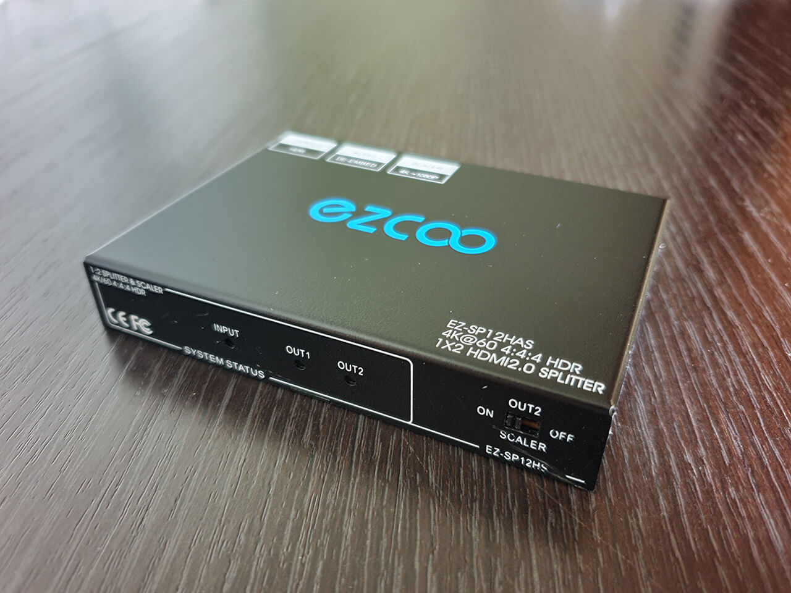
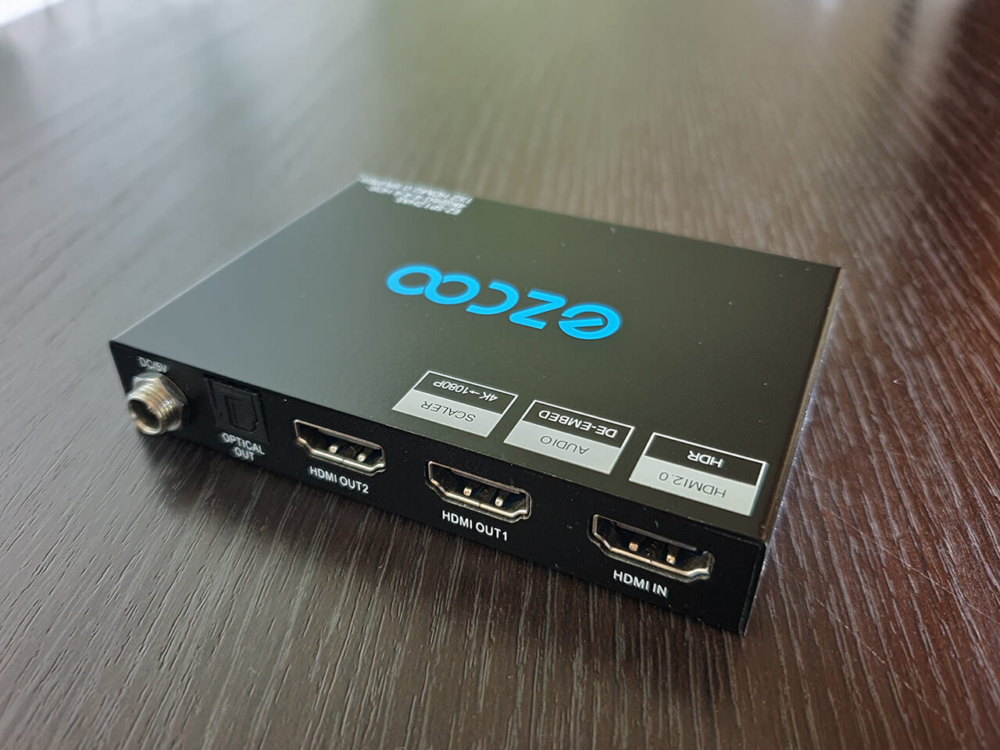

HDMI-сплиттер — это компактное устройство, которое необходимо для подключения большого количества разных приборов к одному HDMI-источнику. Причем сплиттер не только распределяет сигналы и направляет их к различным устройствам, но и значительно усиливает их, что не менее важно для получения качественного видео и звука на выходе.
В продаже имеются множество моделей данного оборудования различающихся как по цене так и по набору характеристик. Устройства имеющие поддержку разрешения на входе только 1080P или полноценные 4K и выше, отсутствие или наличие работы HDMI CEC, поддерживающие технологию VRR и повышенную частоту обновления (актуально для игровых консолей в качестве источника сигнала) и так далее.
Для этого проекта необходимо искать сплиттер со следующими основными характеристиками:
- HDMI 2.0
- HDCP 2.2
- HDMI out 1 - 4K, 60Hz
- HDMI out 2 - 1080P
Для себя я выбрал следующую модель сплиттера — Ezcoo EZ-SP12HAS (ссылка)
 
Данный сплиттер может удалить из входного сигнала HDCP сотавляющую (CAS/Cascade mod), защиту цифрового содержимого, для последующей записи содержимого USB картой захвата. С другим сплиттером на выходе карты захвата будет просто пустое содержимое.